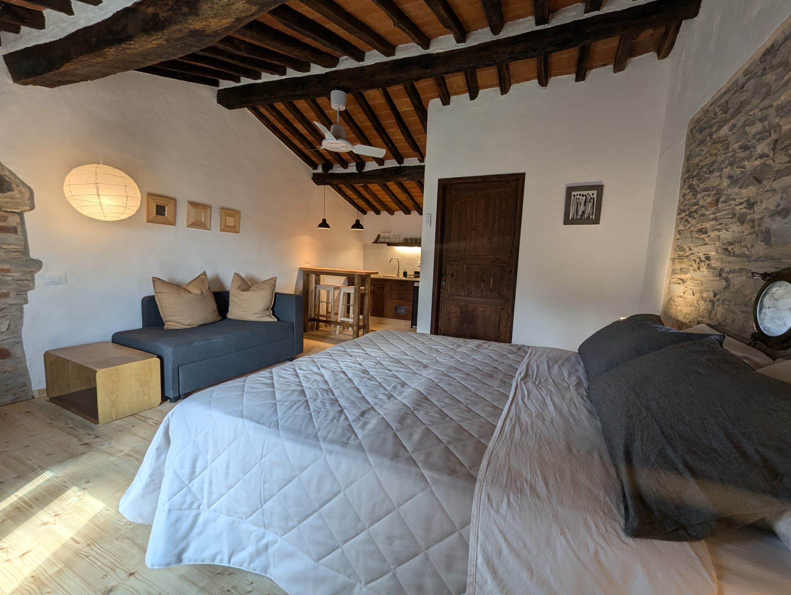
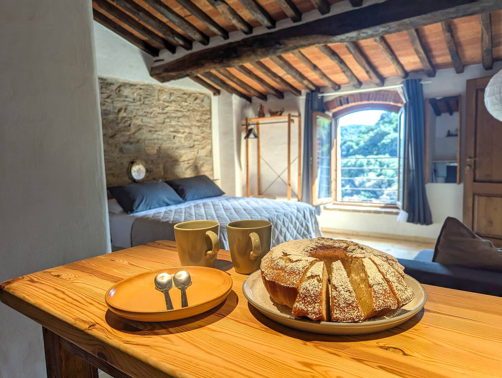
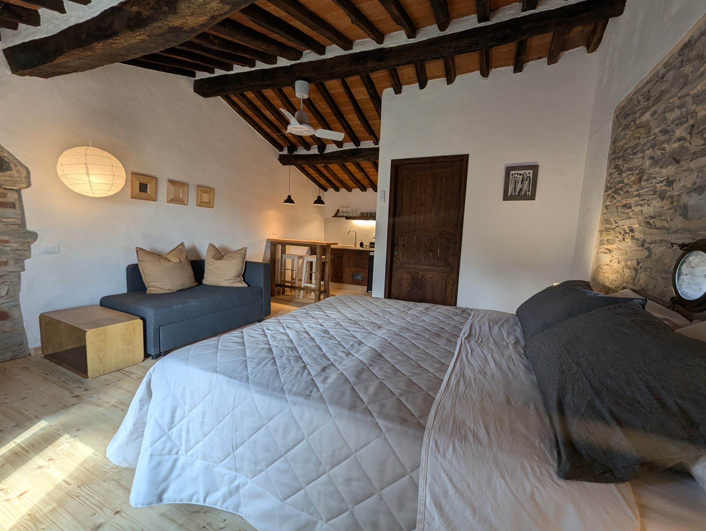
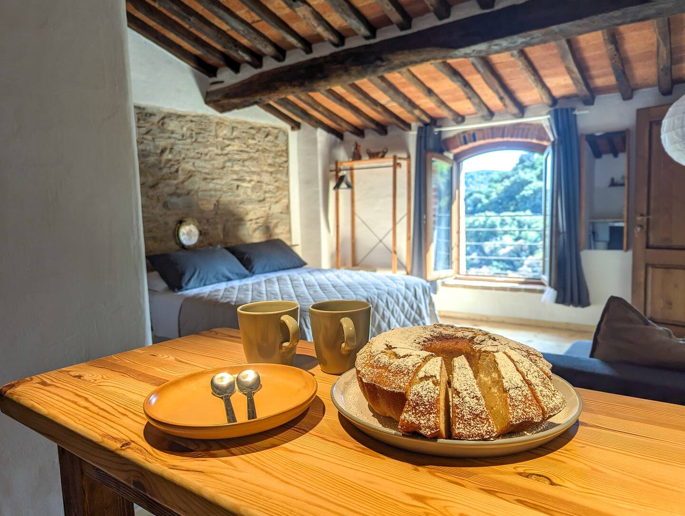

Über diese Unterkunft
Das Hotel liegt auf dem Poggetto " le Fornaci", nur wenige Meter vom historischen Zentrum des mittelalterlichen Dorfes Sassetta entfernt," Il Palazzo", eine Einheit, die in 3 Studios mit eigenem Bad und kleiner Küchenzeile unterteilt ist, mit herrlichem Blick auf die mediterrane Macchia. Großer Wohnbereich und Gemeinschaftsküche. Die Struktur wurde kürzlich mit natürlichen und wenig belastenden Materialien restauriert. Privater Parkplatz ca. 200 m. ( Ladung Entladung vor dem Gebäude erlaubt).
Die Unterkunft
Jedes Zimmer wurde einzigartig eingerichtet und verfügt über einen Wohnbereich mit Waschbecken, Wasserkocher, Kühlschrank, Bereich für kalte Mahlzeiten und ein eigenes Bad , das vollständig aus Materialien des Bio-Gebäudes (Kalksteine, Kalkstein und Pastellone) besteht. Das Zimmer "Rustica" und "La Due" bieten ein Schlafsofa, auf dem ein dritter Gast untergebracht werden kann. (2 Gäste +1) Ein gemeinsamer Wohnbereich und eine Küche stehen für alle drei Wohnungen zur Verfügung.
Zugang für Gäste
Jedes Zimmer hat ein eigenes Bad und einen kleinen Bereich zur Zubereitung von kalten Mahlzeiten. Große Küche und gemeinsamer Wohnbereich stehen allen drei Wohnungen zur Verfügung. *Wir bieten unseren Gästen einen Rabatt für den Zugang zu den Thermen von Sassetta! *
Weitere wichtige Hinweise
Der Palast befindet sich am Poggetto delle Fornaci, kurz vor dem mittelalterlichen Dorf Sassetta. Das Gebäude bietet den Kunden einen privaten Parkplatz in ca. 200 m Entfernung (eventuelle Entladung vor der Unterkunft erlaubt)